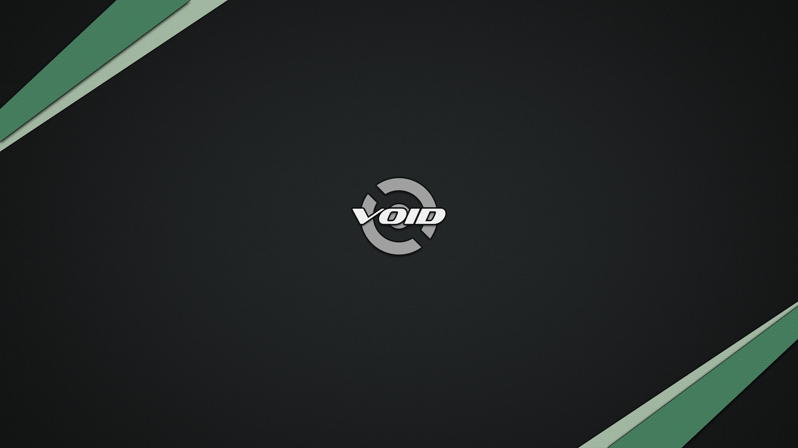

[WIP] ntr is what I call my current
Void Linux
setup on my ThinkPad X220. It aims to be very minimalistic and
efficient.
If you think I can improve it, or simply want to suggest
something cool, please do so via
matrix
or
email.
LoC
- Hardware {Specs, Setup}
- Software {Core Packages, Installing Packages}
- Configs {niri, waybar, tofi, foot, ghostty, zsh, qutebrowser, micro, helix, limine}
- Scripts
- Screensaver
- Wallpapers & Fonts
Hardware
Specs, CUZ IT TRENDY
- Model: Lenovo ThinkPad X220
- CPU: Intel Core i5-2520M @ 2.50GHz
- GPU: Intel HD Graphics 3000
- Disk: 320GB SATA HDD
- Memory: 4GB DDR3-1333
- Display: 12.5" 1366x768 TN Matte
Setup, CUZ IT VITAL
# Enable graphics for X220 iGPU
xbps-install -S linux-firmware-intel xf86-video-intel mesa-dri
# Specific kernel params (limine.conf later)
echo 'i915.enable_psr=0 i915.fastboot=1' >> /etc/modprobe.d/i915.conf
Software
Core Packages
- Compositor/WM: niri
- Status Bar: waybar
- Launcher: tofi
- Notification Daemon: mako
- Wallpaper Setter: feh
- Screensaver/Lock: x
- Display Manager: ly
- Terminal: foot
- Terminal Alt.: ghostty
- Shell: zsh
- Theming Engine: pywal
- Browser: qutebrowser
- Browser Alt.: librewolf
- Editor: micro
- Editor Alt.: helix
- Document Viewer: zathura
- Image Viewer: feh
- Bootloader: limine
- Screenshot Util: grim
- Region Selector: slurp
- Clipboard Manager: wl-clipboard
Development tools, such as git, gcc and make, were not listed purposefully.
Installing Packages
xbps-install -S niri waybar tofi mako feh ly foot foot-terminfo ghostty grim slurp wl-clipboard swaybg swayidle qutebrowser librewolf micro helix limine linux-firmware-intel mesa-dri xdg-desktop-portal-wlr xdg-desktop-portal-gtk git gcc make python3 python3-pip zsh
Configs
Only the main, most vital configs are shown here. Oh, and not the complete files, of course. See them all (in full) at my dotfiles.
~/.config/niri/config.kdl
~/.config/waybar/style.css
~/.config/waybar/config
~/.config/tofi/config
/etc/ly/config.ini
~/.config/foot/foot.ini
~/.config/ghostty/config
~/.zshrc
~/.config/qutebrowser/config.py
~/.config/micro/settings.json
~/.config/micro/bindings.json
~/.config/micro/colors.conf
~/.config/helix/config.toml
/boot/limine/limine.conf
Scripts
Small collection of shell scripts.
- Wallpaper + pywal theme switcher
- fc-list | tofi selector
- pkill -USR1 waybar foot mako ...
Screensaver
Custom ASCII screensaver.
Wallpapers & Fonts
I have gathered a bunch of wallpapers from
Void-Wallpapers
and
voidlinux-i3, as well as some cool fonts from
Nerd Fonts
and
GitHub.
The following list contains every font in its regular style:
- This is AnonymiceProNF
- This is CommitMonoNF
- This is DroidSansMNFMono
- This is GohuFontuni14NF
- This is HurmitNF
- This is IntoneMonoNF
- This is IosevkaTermNFMono
- This is MonaspaceArgonNF
- This is MonaspaceKryptonNF
- This is MonaspaceNeonNF
- This is MonaspaceRadonNF
- This is MonaspaceXenonNF
- This is MononokiNFMono
- This is ProFontWindowsNF
- This is ProggyCleanNFMono
- This is ShureTechMonoNFMono
- This is TerminessNFMono
And here's one of the included wallpapers, just to give you a little taste:
It is important to note that all wallpapers were first optimized with oxipng and then resized to 1366x768 using imagemagick.
The chosen 13 (actually 17, zipped) fonts and 51 wallpapers
(also zipped) can be independently downloaded by clicking the
buttons below.